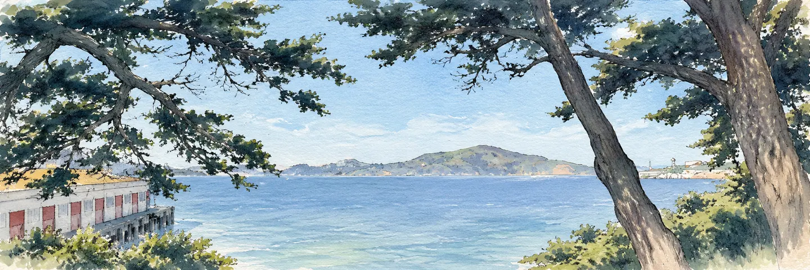

Ben Norman
Hi, I'm Ben. I believe that AI could soon be smarter than humans at almost everything. I want to do what I can to improve the odds the world navigates this situation well.
Currently, I'm a Grantmaking Fellow at BlueDot Impact. I mainly work on Rapid Grants, a programme that funds time and resources for AI safety and biosecurity work.
Previously, I was a Visiting Researcher at the Safe AI Forum, researching opportunities for international coordination to prevent AI-enabled biological misuse. I also contributed to broader strategy at SAIF, including work on international AI agreements.
Other recent projects include trying to figure out how to get more AI tools for better decisions and coordination built, co-organising a hackathon, and more miscellaneous activities.
I also care a lot about freedom, pluralism, civilisational progress, and animal welfare.

Last updated October 2026